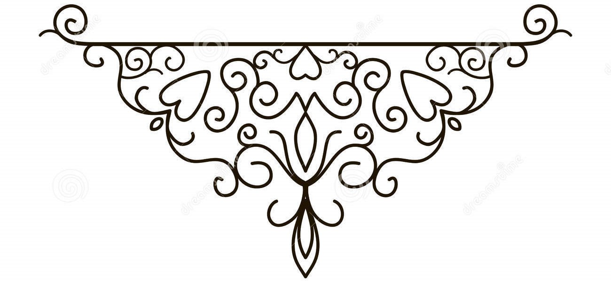

Nikhil Rathoure
,
born in Mainpuri,Uttar Pradesh,is a
Computer technology Enthusiast.
He studied till 12 standard
at St. Thomas. Sr. Sec. School, Mainpuri
(affiliated to CISCE,new Delhi)
Now, He is Studying for his B.E
at UIET,Hoshiarpur .
Panjab University
He loves programming
new stuffs
especially related to real world Problems.
His areas of interest are
